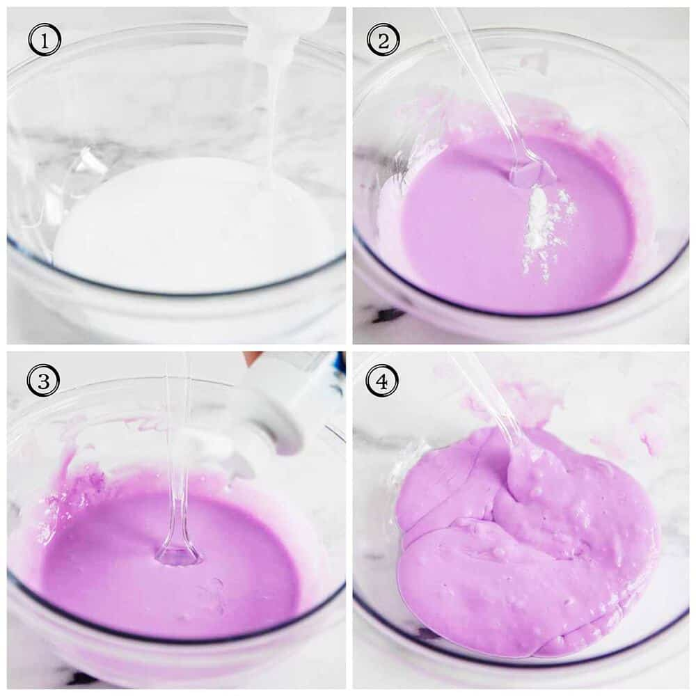

How to Make Slime
Ingredients
- 8-ounce bottle Elmer's white school glue
- 1 1/2-2 Tablespoons contact saline solution
- 1 Tablespoon baking soda
- Food coloring, optional
Directions
- Squeeze the bottle of glue into a bowl. Add your food coloring if desired and stir until combined.
- Mix in saline solution. If it's too sticky add more saline solution. The more you add, the thicker it'll be. The less you add, the slimier it'll be.
- Using your hands, knead the slime until it holds together.
- Store slime in a container with lid
